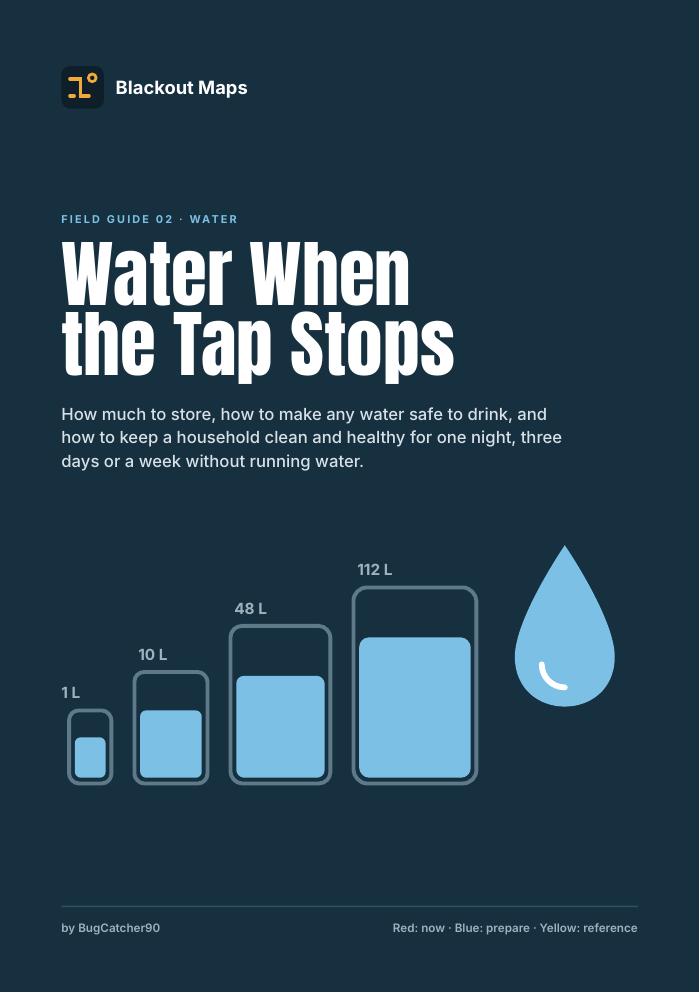
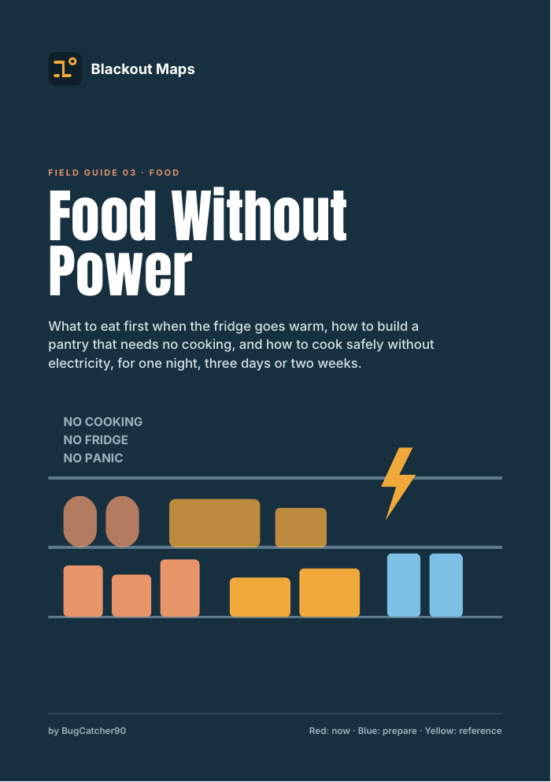
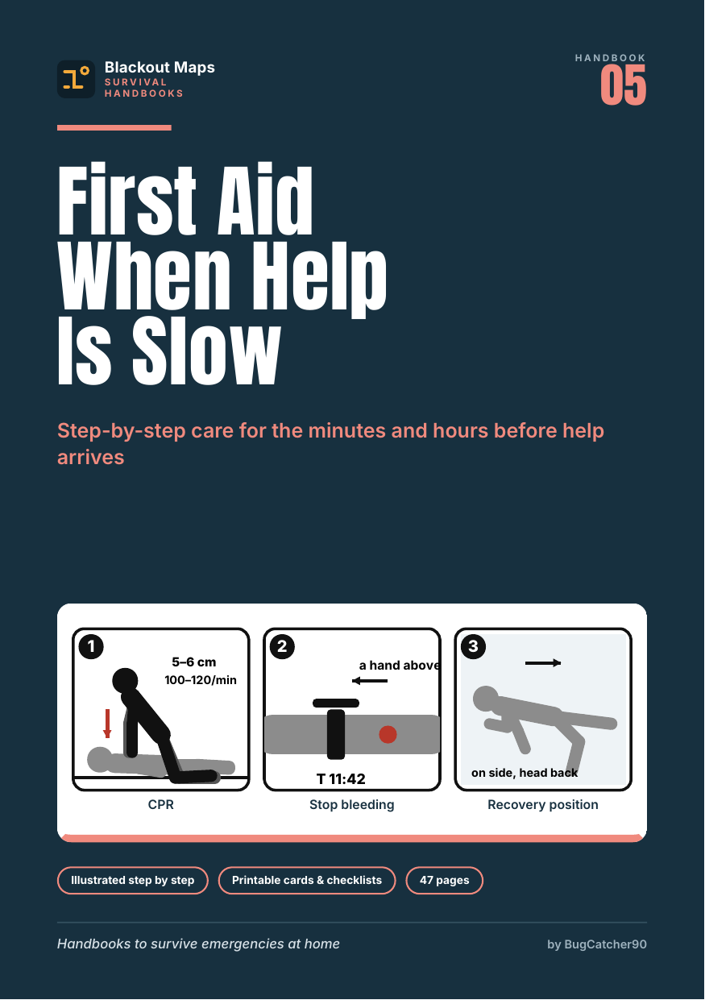
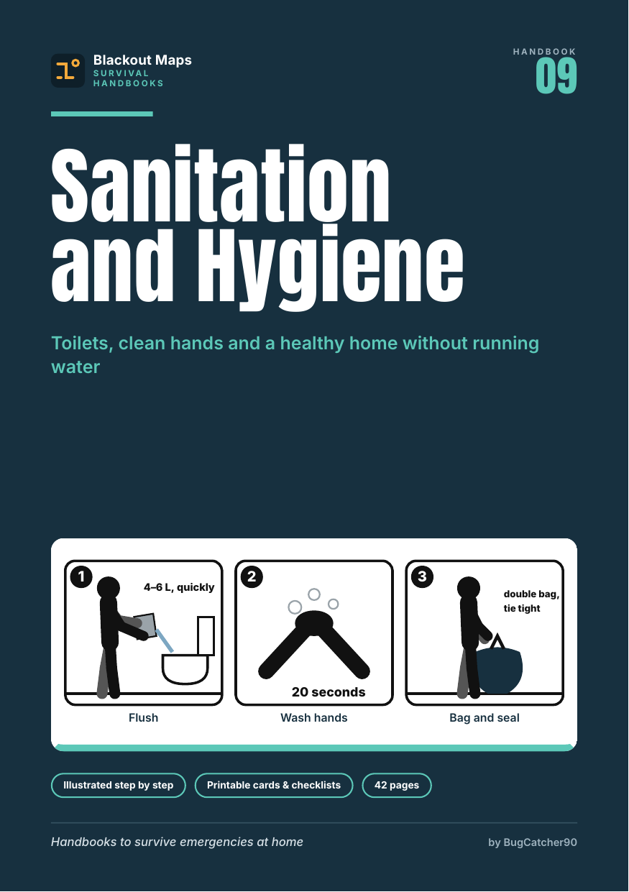
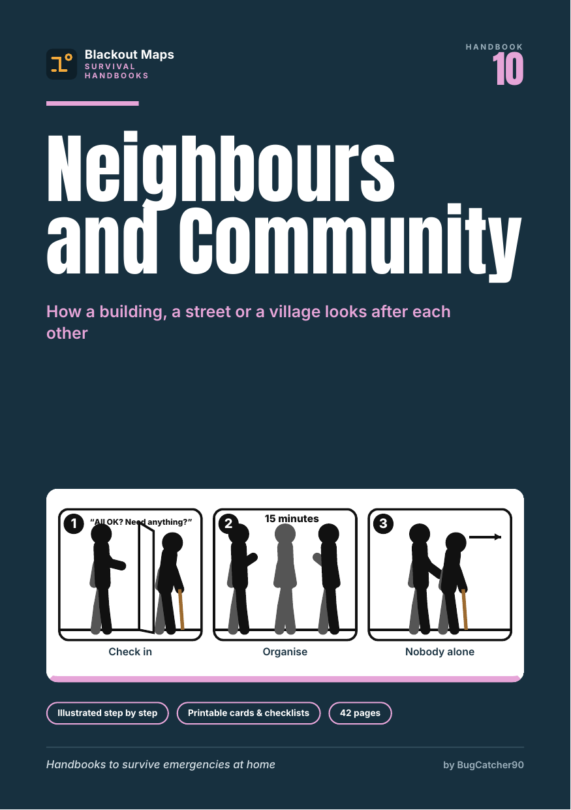

Power in a Blackout
Light, phones and a cold fridge through a blackout: what to do in the first ten minutes, and how to size a power bank, station or generator for your home.
Read the full description€9.80

Illustrated field guides for emergencies at home. Each one has three parts, with a coloured tab you can find in the dark: what to do now, how to prepare, and cards and forms to print. Written for Portugal and Spain, useful anywhere.
Any 3 guides: 15% off. The full set: 50% off.
Light, phones and a cold fridge through a blackout: what to do in the first ten minutes, and how to size a power bank, station or generator for your home.
Read the full description€9.80

How much water to store, how to make any fresh water safe to drink, and how to keep a household clean and healthy without the tap.
Read the full description€7.80

What to eat first when the fridge goes warm, a pantry you can eat cold, and safe ways to cook with gas, retained heat or a battery.
Read the full description€7.40

When to stay and when to leave, what to grab in ten minutes, how to pack a bag you can carry, and how to find your family with no phone.
Read the full description€7.80

Illustrated cards for the first minutes (CPR, bleeding, choking, burns, chest pain) and how to care for someone for hours while help is slow.
Read the full description€9.40

How to get reliable news, reach your family and call for help when the internet, phones and power go down.
Read the full description€8.20

What to do in a fire, a gas leak or a carbon monoxide alarm, and how to stop candles, heaters and batteries starting one during an outage.
Read the full description€7.00

How to keep people safe in a cold home or a heatwave without power, fix storm damage, shelter from smoke, and know when to go elsewhere.
Read the full description€7.40

Toilets without water or sewers, clean hands with a jug, rubbish when collection stops, and illness in the house without running water.
Read the full description€7.40

Who to check on first, a 15-minute meeting for the building or street, and a contact sheet and buddy system agreed before you need them.
Read the full description€7.40